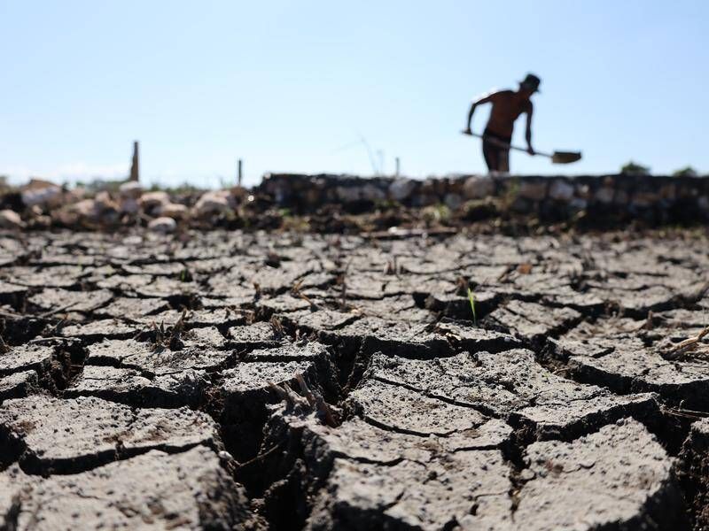

El Niño developing in the Pacific could become the strongest in living memory
2026, August 21

El Niño developing in the Pacific could become the strongest in living memory
2026, August 21
United Kingdom
Yes — this is a very significant climate forecast. The Met Office is warning that the El Niño developing in the Pacific could become the strongest in living memory, potentially making 2027 an exceptionally hot year.🌊 What is happening?
El Niño occurs when unusually warm water develops across the tropical Pacific. Normally, trade winds push warm surface water westwards toward Indonesia and Australia. During El Niño, those winds weaken, allowing a huge amount of warm water to shift eastwards.
The current event is developing unusually strongly. Met Office long-range forecasting chief Adam Scaife said:
“I have never seen an El Niño signal this intense in our forecasts.”
The World Meteorological Organization had already estimated an 80% probability of El Niño during June–August 2026, with probabilities around or above 90% that it would continue into November.
🌡️ Why does it matter?
El Niño doesn't simply mean "warmer everywhere." It redistributes heat and changes atmospheric circulation, producing very different effects around the world.
Potential consequences include:
🔥 Higher global temperatures — El Niño adds a natural warming boost on top of human-caused climate warming.
🌡️ 2027 could become the hottest year ever recorded. The Met Office considers this very likely if the event develops as forecast.
🌧️ More rainfall and storms in some regions, including parts of Europe.
🏜️ Drought in other areas, particularly parts of southern Africa, Australia and South America.
🌾 Agricultural disruption, affecting crops and food prices.
🐟 Major impacts on fisheries, especially around the Pacific coast of South America.
🌊 Increased risks of flooding, extreme rainfall and other weather extremes in susceptible regions.
Strong historical El Niño events such as 1982–83 and 1997–98 caused enormous economic and agricultural disruption. Reuters estimates that those two events were associated with roughly $4.1 trillion and $5.7 trillion respectively in global economic losses.
One important caveat: "strongest in living memory" is a forecast, not a certainty that has already been established. The event is still developing, and its eventual peak intensity and global effects can change as new observations come in. Current forecasts, however, are sufficiently unusual that multiple meteorological agencies are raising the alarm. China's National Climate Centre has also warned that this could become a "super El Niño."